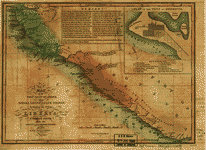

|  |
The online data analysis system uses the Survey Documentation and Analysis (SDA) program developed and maintained by the Computer-assisted Survey Methods Program at the University of California, Berkeley. . NACJD-Data Analysis System Data Analysis System NACJD Home . 2 NACJD Collections Available for Use with Data Analysis System Documentation for SDA from the Computer-assisted Survey Methods Program at the University of California, Berkeley Introduction to NACJD Online Data Analysis System A selection of NACJD data collections is available for online data analysis. This means that users can perform certain statistical procedures on the data, create custom subsets, or browse the codebook on the internet, without downloading the entire collection and importing the data into a statistical package. |